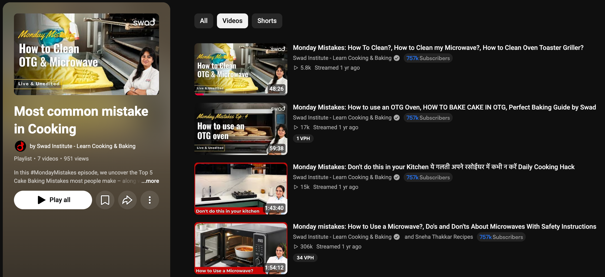

Case 02 · Editorial strategy · Swad Cooking Institute
Matching content to the chef — series formats that fit the host
YouTube live topics were matched to each chef’s on-camera strength, while How to Store and Monday Mistake gave the channel repeatable formats.
Context
Chefs on camera had different strengths
Time with the chef team made it clear that the same recipe idea does not land the same way with every host. Each chef already had a distinct on-camera strength. I matched YouTube live topics so the person and the subject reinforced each other, building recognisable host profiles on the institute channel instead of relying on one generic recipe calendar.

Chef Sneha · owner
The most senior voice on the team, Sneha brought an experienced, trust-led presence. Authentic recipes and practical methods featuring her were a stronger fit than unrelated topics. That authority also suited a deeper live on kitchen tools and cookware.

Chef Jeni
Jeni’s high-energy, humorous and cheerful live style suited restaurant-style and street-style food: fried items, fast food and snack-led topics. The subject and pace were chosen to feel natural to how she already appeared on camera.

Chef Maya
Maya’s softer, steady and nurturing delivery suited international and lighter cooking, health-minded adaptations of heavier dishes, and useful home tips. Her role was closer to a guide helping viewers make balanced choices than simply demonstrating a recipe.

Chef Rakhi
Rakhi’s precise, technical delivery suited bakery-led topics and structured culinary teaching: cookies, cakes, less-common bakes and the “why this works” behind a method.
Casting was intentional: trust and authenticity with Sneha; high-energy savoury and street food with Jeni; health and fusion-led guidance with Maya; and bakery technique with Rakhi.
Strategy
Familiar topics, repeatable formats
I moved beyond recipe-only calendars by suggesting practical, non-recipe topics that gave viewers useful answers and prompted positive responses. The editorial principle was to take a familiar subject people thought they knew, then offer a clearer method, shortcut or detail they may have missed. The ghee-making live put that thinking into practice with an easier method for a common household task.
How to Store turned everyday questions—what belongs in the fridge or outside, what can be frozen, and how to keep ingredients fresh for longer—into a repeatable series. Monday Mistake gave common, easily overlooked kitchen errors a recurring weekly-style format. The two series moved the channel beyond isolated recipe uploads and gave viewers useful reasons to return.
Kitchen tools and cookware was a separate basic-but-deep live, not a How to Store episode. It started with which utensils to use and went further into materials, what to limit and a healthier everyday kitchen setup. Not every topic was chosen only for maximum reach; clear teaching could hold the right viewers without relying only on loud hooks.
For course-facing support, a humour-led Basic Cooking Reel added one short-form, shareable promotion.
Work output
Selected output
Formats in practice: chef–topic fit, How to Store examples, a standalone tools live, ghee as a clearer method, Monday Mistake as a recurring series, and one course Reel.


Evidence in practice
Repeatable format · How to Store
Everyday questions, useful answers
Four examples from the series show how familiar kitchen questions became practical, repeatable videos.
Mangoes, freezing and pulp
How to Store · at the time233KDry masala
How to Store · at the time208KGreen chilli paste, lemon juice and peas
How to Store · at the time133KGreen leaves and mint
View counts are approximate and reflect the figures recorded at the time of this work.
Other formats, in action
Host fit · Chef SnehaKitchen tools & cookwareStandalone practical live · ~115K views at the time Clearer methodGhee-making liveA familiar topic, explained through an easier method Recurring seriesMonday MistakeCommon kitchen mistakes, brought into a repeatable format Short-form promoBasic Cooking ReelHumour-led, course-facing supportOpen the full series and supporting content:
